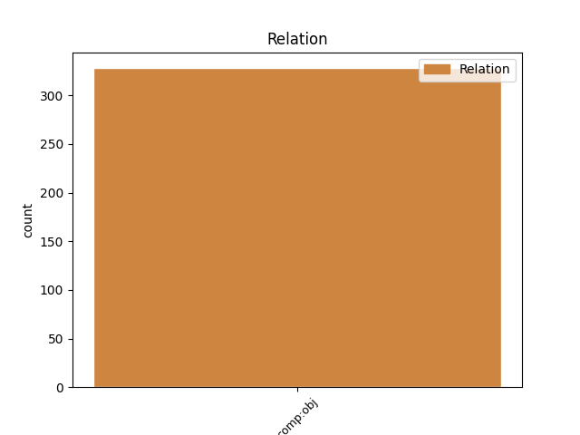
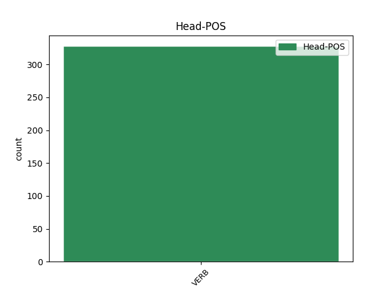
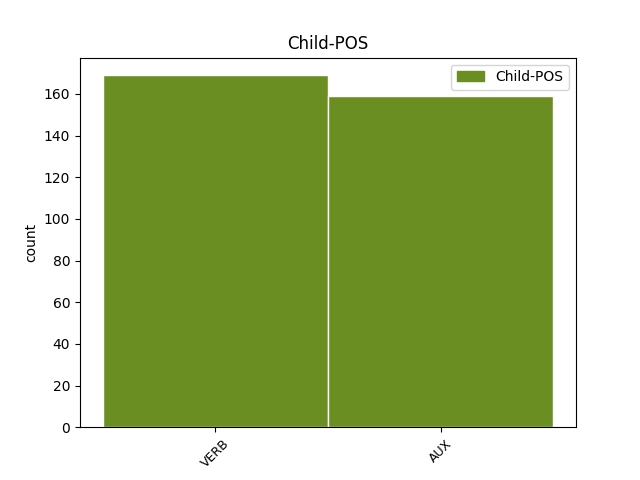

Distribution of features within this leaf



Agreement Rules sorted by frequency.
- When the dependent token is the direct object complements(comp:obj) of the head token, and the head token is VERB
1 L' _ _ _ _ 0 _ _ _
2 autor _ _ _ _ 0 _ _ _
3 destaca destacar VERB VERB Mood=Ind|Number=Sing|Person=3|Tense=Pres|VerbForm=Fin 0 _ _ _
4 : _ _ _ _ 0 _ _ _
5 " _ _ _ _ 0 _ _ _
6 Està estar AUX AUX Mood=Ind|Number=Sing|Person=3|Tense=Pres|VerbForm=Fin 3 comp:obj _ _
7 passant _ _ _ _ 0 _ _ _
8 el _ _ _ _ 0 _ _ _
9 que _ _ _ _ 0 _ _ _
10 molts _ _ _ _ 0 _ _ _
11 es _ _ _ _ 0 _ _ _
12 temien _ _ _ _ 0 _ _ _
13 i _ _ _ _ 0 _ _ _
14 presagiaven _ _ _ _ 0 _ _ _
15 arran _ _ _ _ 0 _ _ _
16 de _ _ _ _ 0 _ _ _
17 la _ _ _ _ 0 _ _ _
18 caiguda _ _ _ _ 0 _ _ _
19 de _ _ _ _ 0 _ _ _
20 Helmut _ _ _ _ 0 _ _ _
21 Kohl _ _ _ _ 0 _ _ _
22 i _ _ _ _ 0 _ _ _
23 es _ _ _ _ 0 _ _ _
24 deixa _ _ _ _ 0 _ _ _
25 sentir _ _ _ _ 0 _ _ _
26 la _ _ _ _ 0 _ _ _
27 falta _ _ _ _ 0 _ _ _
28 d' _ _ _ _ 0 _ _ _
29 un _ _ _ _ 0 _ _ _
30 nou _ _ _ _ 0 _ _ _
31 impuls _ _ _ _ 0 _ _ _
32 , _ _ _ _ 0 _ _ _
33 d' _ _ _ _ 0 _ _ _
34 empenta _ _ _ _ 0 _ _ _
35 i _ _ _ _ 0 _ _ _
36 d' _ _ _ _ 0 _ _ _
37 embranzida _ _ _ _ 0 _ _ _
38 per _ _ _ _ 0 _ _ _
39 remuntar _ _ _ _ 0 _ _ _
40 el _ _ _ _ 0 _ _ _
41 vol _ _ _ _ 0 _ _ _
42 " _ _ _ _ 0 _ _ _
43 . _ _ _ _ 0 _ _ _
Disagree Examples:
1 ' _ _ _ _ 0 _ _ _
2 Els _ _ _ _ 0 _ _ _
3 alemanys _ _ _ _ 0 _ _ _
4 fan fer VERB VERB Mood=Ind|Number=Plur|Person=3|Tense=Pres|VerbForm=Fin 27 comp:obj _ _
5 d' _ _ _ _ 0 _ _ _
6 espònsors _ _ _ _ 0 _ _ _
7 d' _ _ _ _ 0 _ _ _
8 Europa _ _ _ _ 0 _ _ _
9 com _ _ _ _ 0 _ _ _
10 els _ _ _ _ 0 _ _ _
11 catalans _ _ _ _ 0 _ _ _
12 ho _ _ _ _ 0 _ _ _
13 fem _ _ _ _ 0 _ _ _
14 d' _ _ _ _ 0 _ _ _
15 Espanya _ _ _ _ 0 _ _ _
16 , _ _ _ _ 0 _ _ _
17 i _ _ _ _ 0 _ _ _
18 a _ _ _ _ 0 _ _ _
19 sobre _ _ _ _ 0 _ _ _
20 ens _ _ _ _ 0 _ _ _
21 titllen _ _ _ _ 0 _ _ _
22 d' _ _ _ _ 0 _ _ _
23 insolidaris _ _ _ _ 0 _ _ _
24 ' _ _ _ _ 0 _ _ _
25 , _ _ _ _ 0 _ _ _
26 ha _ _ _ _ 0 _ _ _
27 afegit afegir VERB VERB Gender=Masc|Number=Sing|Tense=Past|VerbForm=Part 0 _ _ _
28 . _ _ _ _ 0 _ _ _
1 En _ _ _ _ 0 _ _ _
2 el _ _ _ _ 0 _ _ _
3 mateix _ _ _ _ 0 _ _ _
4 sentit _ _ _ _ 0 _ _ _
5 considera considerar VERB VERB Mood=Ind|Number=Sing|Person=3|Tense=Pres|VerbForm=Fin 59 comp:obj _ _
6 que _ _ _ _ 0 _ _ _
7 l' _ _ _ _ 0 _ _ _
8 actuació _ _ _ _ 0 _ _ _
9 de _ _ _ _ 0 _ _ _
10 la _ _ _ _ 0 _ _ _
11 grua _ _ _ _ 0 _ _ _
12 s' _ _ _ _ 0 _ _ _
13 hauria _ _ _ _ 0 _ _ _
14 de _ _ _ _ 0 _ _ _
15 limitar _ _ _ _ 0 _ _ _
16 als _ _ _ _ 0 _ _ _
17 casos _ _ _ _ 0 _ _ _
18 en _ _ _ _ 0 _ _ _
19 què _ _ _ _ 0 _ _ _
20 el _ _ _ _ 0 _ _ _
21 vehicle _ _ _ _ 0 _ _ _
22 estacionat _ _ _ _ 0 _ _ _
23 suposa _ _ _ _ 0 _ _ _
24 un _ _ _ _ 0 _ _ _
25 obstacle _ _ _ _ 0 _ _ _
26 per _ _ _ _ 0 _ _ _
27 a _ _ _ _ 0 _ _ _
28 la _ _ _ _ 0 _ _ _
29 circulació _ _ _ _ 0 _ _ _
30 de _ _ _ _ 0 _ _ _
31 la _ _ _ _ 0 _ _ _
32 resta _ _ _ _ 0 _ _ _
33 de _ _ _ _ 0 _ _ _
34 vehicles _ _ _ _ 0 _ _ _
35 , _ _ _ _ 0 _ _ _
36 per _ _ _ _ 0 _ _ _
37 al _ _ _ _ 0 _ _ _
38 desplaçament _ _ _ _ 0 _ _ _
39 dels _ _ _ _ 0 _ _ _
40 vianants _ _ _ _ 0 _ _ _
41 o _ _ _ _ 0 _ _ _
42 la _ _ _ _ 0 _ _ _
43 sortida _ _ _ _ 0 _ _ _
44 de _ _ _ _ 0 _ _ _
45 vehicles _ _ _ _ 0 _ _ _
46 ' _ _ _ _ 0 _ _ _
47 evitant _ _ _ _ 0 _ _ _
48 així _ _ _ _ 0 _ _ _
49 la _ _ _ _ 0 _ _ _
50 sensació _ _ _ _ 0 _ _ _
51 d' _ _ _ _ 0 _ _ _
52 una _ _ _ _ 0 _ _ _
53 finalitat _ _ _ _ 0 _ _ _
54 merament _ _ _ _ 0 _ _ _
55 recaptatòria _ _ _ _ 0 _ _ _
56 ' _ _ _ _ 0 _ _ _
57 , _ _ _ _ 0 _ _ _
58 ha _ _ _ _ 0 _ _ _
59 dit dir VERB VERB Gender=Masc|Number=Sing|Tense=Past|VerbForm=Part 0 _ _ _
60 Riera _ _ _ _ 0 _ _ _
61 . _ _ _ _ 0 _ _ _
1 El _ _ _ _ 0 _ _ _
2 que _ _ _ _ 0 _ _ _
3 també _ _ _ _ 0 _ _ _
4 es _ _ _ _ 0 _ _ _
5 desconeix _ _ _ _ 0 _ _ _
6 és ser VERB VERB Mood=Ind|Number=Sing|Person=3|Tense=Pres|VerbForm=Fin 0 _ _ _
7 qui _ _ _ _ 0 _ _ _
8 serà ser AUX AUX Mood=Ind|Number=Sing|Person=3|Tense=Fut|VerbForm=Fin 6 comp:obj _ _
9 el _ _ _ _ 0 _ _ _
10 conductor _ _ _ _ 0 _ _ _
11 de _ _ _ _ 0 _ _ _
12 l' _ _ _ _ 0 _ _ _
13 embarcació _ _ _ _ 0 _ _ _
14 , _ _ _ _ 0 _ _ _
15 tot _ _ _ _ 0 _ _ _
16 i _ _ _ _ 0 _ _ _
17 que _ _ _ _ 0 _ _ _
18 segurament _ _ _ _ 0 _ _ _
19 serà _ _ _ _ 0 _ _ _
20 algun _ _ _ _ 0 _ _ _
21 dels _ _ _ _ 0 _ _ _
22 tres _ _ _ _ 0 _ _ _
23 primers _ _ _ _ 0 _ _ _
24 esportistes _ _ _ _ 0 _ _ _
25 del _ _ _ _ 0 _ _ _
26 rànquing _ _ _ _ 0 _ _ _
27 espanyol _ _ _ _ 0 _ _ _
28 de _ _ _ _ 0 _ _ _
29 windsurf _ _ _ _ 0 _ _ _
30 . _ _ _ _ 0 _ _ _
1 El _ _ _ _ 0 _ _ _
2 vehicle _ _ _ _ 0 _ _ _
3 ha haver AUX AUX Mood=Ind|Number=Sing|Person=3|Tense=Pres|VerbForm=Fin 42 comp:obj _ _
4 estat _ _ _ _ 0 _ _ _
5 dut _ _ _ _ 0 _ _ _
6 a _ _ _ _ 0 _ _ _
7 l' _ _ _ _ 0 _ _ _
8 àrea _ _ _ _ 0 _ _ _
9 de _ _ _ _ 0 _ _ _
10 descans _ _ _ _ 0 _ _ _
11 de _ _ _ _ 0 _ _ _
12 l' _ _ _ _ 0 _ _ _
13 A-7 _ _ _ _ 0 _ _ _
14 , _ _ _ _ 0 _ _ _
15 on _ _ _ _ 0 _ _ _
16 tècnics _ _ _ _ 0 _ _ _
17 de _ _ _ _ 0 _ _ _
18 l' _ _ _ _ 0 _ _ _
19 empresa _ _ _ _ 0 _ _ _
20 transportista _ _ _ _ 0 _ _ _
21 , _ _ _ _ 0 _ _ _
22 Veprovesa _ _ _ _ 0 _ _ _
23 Wildfy _ _ _ _ 0 _ _ _
24 ( _ _ _ _ 0 _ _ _
25 de _ _ _ _ 0 _ _ _
26 Carcaixent _ _ _ _ 0 _ _ _
27 , _ _ _ _ 0 _ _ _
28 País _ _ _ _ 0 _ _ _
29 Valencià _ _ _ _ 0 _ _ _
30 ) _ _ _ _ 0 _ _ _
31 , _ _ _ _ 0 _ _ _
32 han _ _ _ _ 0 _ _ _
33 retirat _ _ _ _ 0 _ _ _
34 del _ _ _ _ 0 _ _ _
35 remolc _ _ _ _ 0 _ _ _
36 el _ _ _ _ 0 _ _ _
37 bidó _ _ _ _ 0 _ _ _
38 que _ _ _ _ 0 _ _ _
39 perdia _ _ _ _ 0 _ _ _
40 , _ _ _ _ 0 _ _ _
41 ha _ _ _ _ 0 _ _ _
42 informat informar VERB VERB Gender=Masc|Number=Sing|Tense=Past|VerbForm=Part 0 _ _ _
43 el _ _ _ _ 0 _ _ _
44 Centre _ _ _ _ 0 _ _ _
45 d' _ _ _ _ 0 _ _ _
46 Emergències _ _ _ _ 0 _ _ _
47 de _ _ _ _ 0 _ _ _
48 Catalunya _ _ _ _ 0 _ _ _
49 . _ _ _ _ 0 _ _ _
1 El _ _ _ _ 0 _ _ _
2 conseller _ _ _ _ 0 _ _ _
3 delegat _ _ _ _ 0 _ _ _
4 de _ _ _ _ 0 _ _ _
5 Key-Hotels _ _ _ _ 0 _ _ _
6 , _ _ _ _ 0 _ _ _
7 Xavier _ _ _ _ 0 _ _ _
8 Jornet _ _ _ _ 0 _ _ _
9 , _ _ _ _ 0 _ _ _
10 ha _ _ _ _ 0 _ _ _
11 explicat explicar VERB VERB Gender=Masc|Number=Sing|Tense=Past|VerbForm=Part 0 _ _ _
12 quins _ _ _ _ 0 _ _ _
13 han haver AUX AUX Mood=Ind|Number=Plur|Person=3|Tense=Pres|VerbForm=Fin 11 comp:obj _ _
14 estat _ _ _ _ 0 _ _ _
15 els _ _ _ _ 0 _ _ _
16 motius _ _ _ _ 0 _ _ _
17 que _ _ _ _ 0 _ _ _
18 els _ _ _ _ 0 _ _ _
19 havien _ _ _ _ 0 _ _ _
20 dut _ _ _ _ 0 _ _ _
21 a _ _ _ _ 0 _ _ _
22 invertir _ _ _ _ 0 _ _ _
23 400 _ _ _ _ 0 _ _ _
24 milions _ _ _ _ 0 _ _ _
25 en _ _ _ _ 0 _ _ _
26 la _ _ _ _ 0 _ _ _
27 compra _ _ _ _ 0 _ _ _
28 i _ _ _ _ 0 _ _ _
29 remodelació _ _ _ _ 0 _ _ _
30 del _ _ _ _ 0 _ _ _
31 Berenguer _ _ _ _ 0 _ _ _
32 IV _ _ _ _ 0 _ _ _
33 : _ _ _ _ 0 _ _ _
34 " _ _ _ _ 0 _ _ _
35 Era _ _ _ _ 0 _ _ _
36 l' _ _ _ _ 0 _ _ _
37 hotel _ _ _ _ 0 _ _ _
38 més _ _ _ _ 0 _ _ _
39 conegut _ _ _ _ 0 _ _ _
40 i _ _ _ _ 0 _ _ _
41 emblemàtic _ _ _ _ 0 _ _ _
42 de _ _ _ _ 0 _ _ _
43 Tortosa _ _ _ _ 0 _ _ _
44 . _ _ _ _ 0 _ _ _